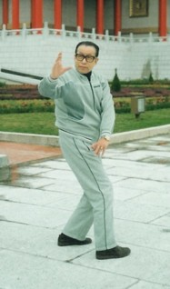

Os sistemas · Internos
Baguazhang · Palma dos Oito Trigramas
Foto
Os sistemas · Internos
O Ba Kua tira seu nome e sua estrutura dos oito trigramas do I-Ching, e se comporta como isso sugere: tudo nele é mudança. Onde o Hsing-I avança em linha reta e o Tai-Chi absorve e devolve, o Ba Kua simplesmente não está onde o ataque cai. Ele se desloca ao redor e continua se movendo.
A prática característica é caminhar o círculo — um passo contínuo e em espiral ao redor de um centro fixo, enquanto a parte superior do corpo sustenta e muda as posições das palmas. Parece uma meditação e funciona como tal, mas é também todo o método de combate em forma condensada. Todo o resto do sistema é um desdobramento do que o círculo ensina.
Sobre a caminhada se constroem as oito mudanças de palma, oito expressões animais, dez exercícios de apoio e três estilos distintos de caminhada, cada um com seu próprio ritmo e aplicação. O sistema também tem um extenso componente de armas, embora ele venha mais tarde.
O que o Ba Kua treina, em última análise, não é um conjunto de respostas, mas a ausência delas — a capacidade de se mover, agir e reagir com total liberdade natural, sem plano e sem hesitação. As oito mudanças são um andaime. O que importa é o que resta quando o andaime é retirado.
Por que caminhar no círculo precisa do olhar de um professor? Leia Por que as artes internas devem ser ensinadas pessoalmente no nosso blog.
O que é Ba Kua (Baguazhang)?
Ba Kua é uma arte marcial interna baseada nos oito trigramas do I Ching. Sua prática característica é caminhar em círculo, e sua estratégia é a mudança constante: tomar ângulos e mover-se ao redor de um ataque em vez de enfrentá-lo de frente.
Por que os alunos de Ba Kua caminham em círculo?
Caminhar em círculo constrói uma base que se mantém estável enquanto o corpo gira, treina o hábito de tomar ângulos, desenvolve potência rotacional e funciona ao mesmo tempo como treino de resistência e como meditação. Nunca se deixa para trás.
O que o currículo de Ba Kua inclui?
As oito mudanças de palma, oito expressões animais, dez exercícios de apoio e três estilos de caminhada, construídos sobre a caminhada em círculo. As armas vêm depois.
Como posso aprender Ba Kua no condado de San Diego?
As aulas são particulares e somente com hora marcada, individuais ou em pequenos grupos, com Sifu Ajay Kumra em Santee, Califórnia (condado de San Diego). Não está perto de San Diego? Ele também viaja pelo mundo para dar aulas particulares onde você estiver. Sua primeira aula é uma aula introdutória gratuita.